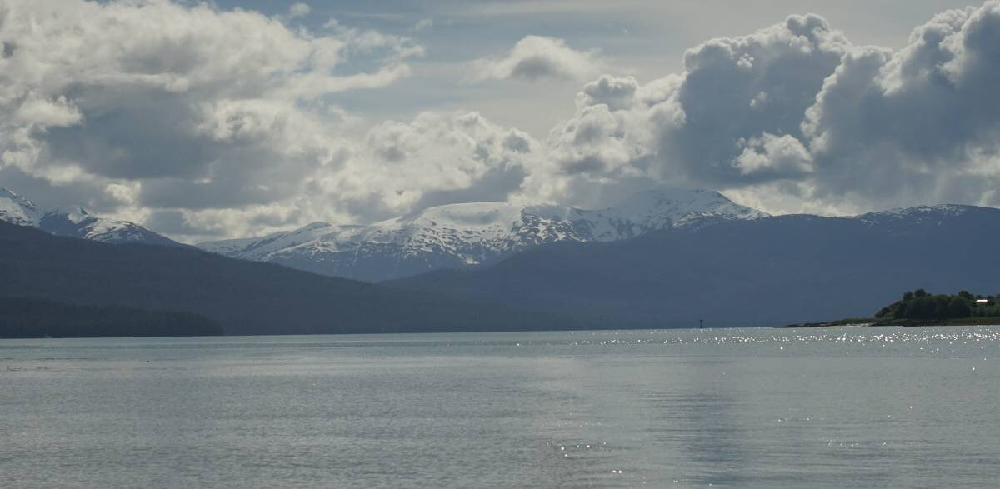

wrangell

On June 13th 2024, we left Berg Bay at 0530, bound for Wrangell. We got up early to catch the last of the flood tide to the narrows halfway up Blake Channel. After the narrows, the current starts to ebb north, which makes it ideal for getting to Wrangell fast. Yesss, double flood!
Although, catching the meeting point of the two currents when both are at zero requires careful planning, we can't arrive too late, otherwise the last of the flood will start running against us. Any bit of current against us makes us crawl at a godawful speed, and it's usually also at that moment that the wind also rises out of where we need to go-that didn't happen today, we were spared. Everything went smooth, at 6h45, at the time of reversal, Pino was gliding through the narrows.
Going to Wrangell by this route, rather than going through Zimovia Strait, adds 7 NM to the journey, but it's a very scenic route, with some worthwhile anchorages to stop at along the way(Berg Bay, Frosty Bay, Madan Bay, Santa Ana Inlet etc).
We chose Blake Channel because we were sick and tired of getting our asses kicked in Clarence Strait, Stikine Strait wasn't attractice either because it is where cruiseships go(we're pre-tty sick of those too), and Zimovia Strait anchorages don't look noteworthy.
Every turn you take when going through Blake Channel reveals a beautiful sight, especially once past Madan Bay. A beautiful snowy mountain range rose behind us as we neared Wrangell. As we neared the city, we returned within cell range, Devine went below to check their messages. We hadn't had internet in 3 days.
The water near Wrangell still had a jade coloring to it, but when nearing the Stikine River, the coloring changed yet again. We saw the point where the two currents meet, the two colorations were divided by a tide line.
We rounded the top of Wrangell Island, past Highfield, past the airport, and towards the city docks. A small cruiseship was idling near the cruiseship terminal, but wasn't moving. Small orange shuttles were zooming from shore to ship. We went past its bow, under the eye of a handful of tourists gathered on the bow of Roald Admunsen, and motored over to Etolin Harbor.

The Reliance guest float was full(for some reason a house was moored onto it? We thought it was a guest float?). We moved past it and went over to Heritage Harbor instead.
Heritage Harbor has more room for transients. They have two transient docks, T1, and T2, that boats can use on a first-come first-served basis. We found a spot on the west side of T2. The Wrangell Harbourmaster manages both facilities. There was plenty of room when we arrived at 1000, but the docks filled up as the day went on. At 1700 most spots were full.
A customs officer showed up a bit after we arrived, maybe they were tracking us on AIS? Even with a cruising license, we are suppose to report our arrival whenever we moor into a big city(Wrangell is on the reporting list). We still can't use our phone to call into the US(our data works fine, though), and we can't use the Roam app(nor do we especially want to). Luckily, because the officer was here, we didn't have to report by phone, he took note of our boat and that was it! Because we were planning to go to Petersburg next, he said we didn't have to report there because he manages both sites and now already knows we will be there. A very kind and accomodating person.
Heritage Harbor is a short walk away from the grocery store, hardware store and the harbourmaster's office. After lunch we walked over to check in with the marina, then we stopped at the grocery store to pick up a few fresh items. The IGA selection was not great, the vegetables appeared to have been frozen... the cucumbers were yellowing, the kale was soft and discolored too. We bought carrots, a few other items, unfortunately, a lot of items appear to be sent here frozen... even some bread we picked up off the shelf was half-thawed. The City Market selection was better, but it is strange for vegetables to be lacking, but to find piles of fresh pinapples and watermelons on the shelves.
We spent 2 days here, both were devoid of wind... a good time to stay put. Both days were warm, and sunny... it is like summer had finally come to this part of the world. We enjoyed watching the eagles hound the fisherman just returning with the day's catch, they find a perch near them and keep watch, waiting for scraps. One eagle tried to land on the masthead of a sailboat, we cringed a little when we saw its talons bite at the instruments mounted there, trying to find a comfortable foothold. In the end, it grew tired of trying and found a spot on a fishing boat rig. We've had plenty of time lately to observe eagles from up close, they're such beautiful birds, although they seem to rely on local fishermen a lot for food...